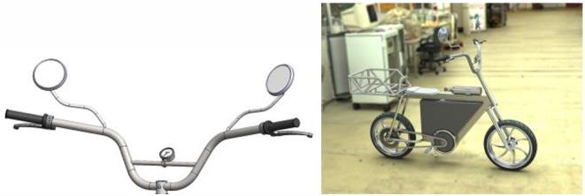

PROJECT MODULE 08
Electric Scooter Project
Collaborative scooter design with part models, assembly work, animations and analysis.
Overall subject mark · 84 (HD)
Project overview
Contributed to an electric scooter project, developing individual components and collaborating on the overall assembly.
My contribution
- Created part models and engineering drawings.
- Collaborated to fit parts into the assembly.
- Created exploded animations and renderings.
- Produced FEA and environmental reports.
Outcome
Overall subject mark: 84 (High Distinction).
